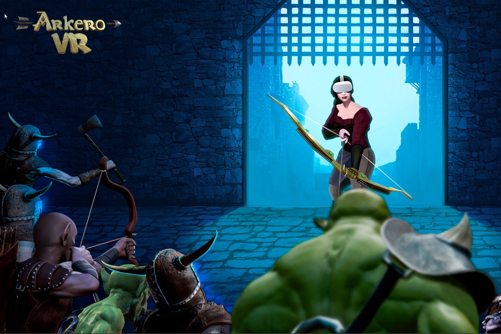

Arkero VR
Arkero VR is a multiplayer VR arena game. Armed with your bow, you fight with your teammates against the hordes of evil.
The game was initially made for Meta Quest 2, and later a Steam version was created.
When I joined the team, our task was to start implementing the multiplayer version using the preexisting single-player campaign code as a base.
My contributions to this project were mostly in the side of the game mechanics, while other members of the team worked on some of the backend, like matchmaking
I also participated with the rest of the team in the game design of this multiplayer arena mode, and helped the team bringing better code and version control practices to our procedures, such as Conventiona Commits and Gitflow.
Here is a list with the main contributions I made to the project
- Reimplementing game mechanics using networking code
This was done using the Photon Fusion framework for networking code. The movement and bow-and-arrow physics were already provided by Fusion samples. The rest was done in-house.- Shared game state and match management
- Organized enemy management depending on the number of users to keep it balanced
- Area-of-Effect powers for the arrows
- Power ups for the arrows
- Personal and group Health Points recovery
- Power up items management
- Synced Damage and score calculations
- Kill Assists
- Physical "HUD" for information on the game (score, health, etc)
- Implementation of the enemy AI in a networking context.
While initially prototyped with an AssetStore pre-made solution (Emerald AI), I had the opportunity to implement our own custom solution when the pre-made one no longer suited our needs. This custom implementation was based on Behaviour trees and was programmed from scracth giving great results and much more flexibility to create new attacks and mechanics - Setting up a framework to allow for the rapid creation of new enemies to the game
- Implementation of time-based events that affect the environment
- Custom remote configuration solutions for several values needed for the game
- User data retreival using the Meta API
- Git repository management
Here is a promotional video I created for the marketing updates of the game